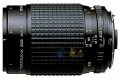
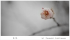

器材库 > 120中幅镜头 > 645 A 120/4 Macro

详细规格
发布日期
未知
焦距
120mm
最大光圈
f/4
最小光圈
f/32
视角（对角）
32.5
镜头结构
9片/7组
最近对焦距离
39cm
滤镜口径
67mm
镜头卡口
P645A
颜色
黑色
尺寸
78.5 x 110mm
重量
695g
faagle2013-10-27 21:335 分
操作性 5.00耐用性 5.00性价比 5.00解像力 5.00色彩还原 5.00机械结构 5.00
十八刀2013-01-26 21:504.92 分
操作性 4.50耐用性 5.00性价比 5.00解像力 5.00色彩还原 5.00机械结构 5.00
风静2012-11-05 22:535 分
操作性 5.00耐用性 5.00性价比 5.00解像力 5.00色彩还原 5.00机械结构 5.00

xjcan2012-08-27 01:124.92 分
操作性 5.00耐用性 5.00性价比 5.00解像力 5.00色彩还原 5.00机械结构 4.50
anno19112012-06-28 15:185 分
操作性 5.00耐用性 5.00性价比 5.00解像力 5.00色彩还原 5.00机械结构 5.00
剑宗一刻2011-09-29 13:144.92 分
操作性 5.00耐用性 5.00性价比 5.00解像力 5.00色彩还原 5.00机械结构 4.50
血色残阳2009-08-10 23:535 分
操作性 5.00耐用性 5.00性价比 5.00解像力 5.00色彩还原 5.00机械结构 5.00
karry2008-04-16 16:134.92 分
操作性 4.50耐用性 5.00性价比 5.00解像力 5.00色彩还原 5.00机械结构 5.00
yongyi2006-06-07 18:065 分
操作性 5.00耐用性 5.00性价比 5.00解像力 5.00色彩还原 5.00机械结构 5.00
dorati2003-07-05 13:474.58 分
操作性 5.00耐用性 4.50性价比 5.00解像力 4.50色彩还原 4.00机械结构 4.50
BILL_GU2003-01-26 09:414.92 分
操作性 5.00耐用性 5.00性价比 4.50解像力 5.00色彩还原 5.00机械结构 5.00
产品图 / 样片
宾得 645 A 120/4 Macro
评测 / 相关文章
该产品暂无存档的评测文章